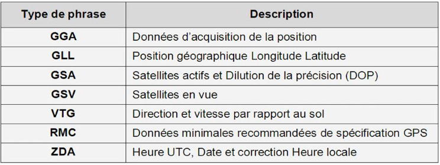
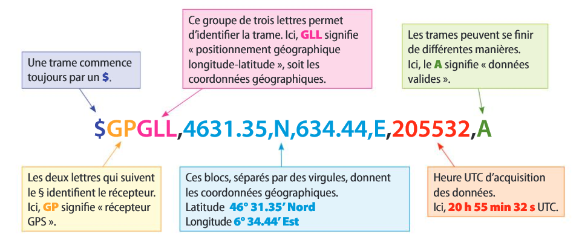
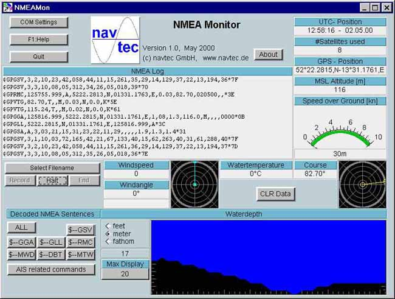
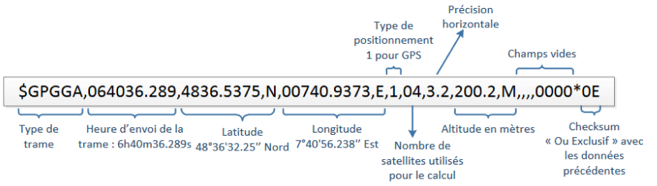

Que signifie NMEA ?
NMEA est l'acronyme de : National Marine & Electronics Association qui est une association américaine de fabricants d'appareils électroniques maritimes dont l'un des objectifs est d'harmoniser et standardiser les équipements de la marine.
Le Protocole NMEA 0183
Le standard NMEA 0183 est un protocole de transmission de données (coordonnées géographiques, heure, vitesse ...) entre les instruments et équipements électroniques liés à la géolocalisation.
Les données sont transmises sous la forme de chaînes de caractères codés en ASCII. On parle alors de trame ou encore de phrase
Les différents types de trames
Il existe en fait plusieurs types de trames qui ne contiennent pas exactement les mêmes informations.
Chaque trame NMEA commence par un $ suivi de deux informations sur la trame.
Le deux premières lettres qui suivent le $ identifient l'origine du signal.
Ci dessous quelques exemples pour les situations où le signal provient d'une géolocalisation par satellites :
BD ou GB pour Beidou ;
GA pour Galileo ;
GP pour GPS ;
GL pour GLONASS.
Suivent ensuite trois lettres qui identifient le type de trame utilisée.
Ci-dessous un tableau donnant différents types existants :

Trame de type GLL (positionnement Géographique Longitude Latitude)
Type de trame qui donne la latitude, la longitude et l'heure.
L'état A signifie que les données sont valides, l'état V qu'il y a une erreur quelque part, donc que les données ne sont pas valides


Trame de type GGA (Données d'acquisition de la position)
Type de trame qui donne entre autres, l'heure, la latitude, la longitude et l'altitude.

Trame de type RMC (Données minimales recommandées)
Type de trame souvent utilisée pour les bateaux. Elle donne l'heure, la latitude, la longitude, la date, la vitesse et le cap.